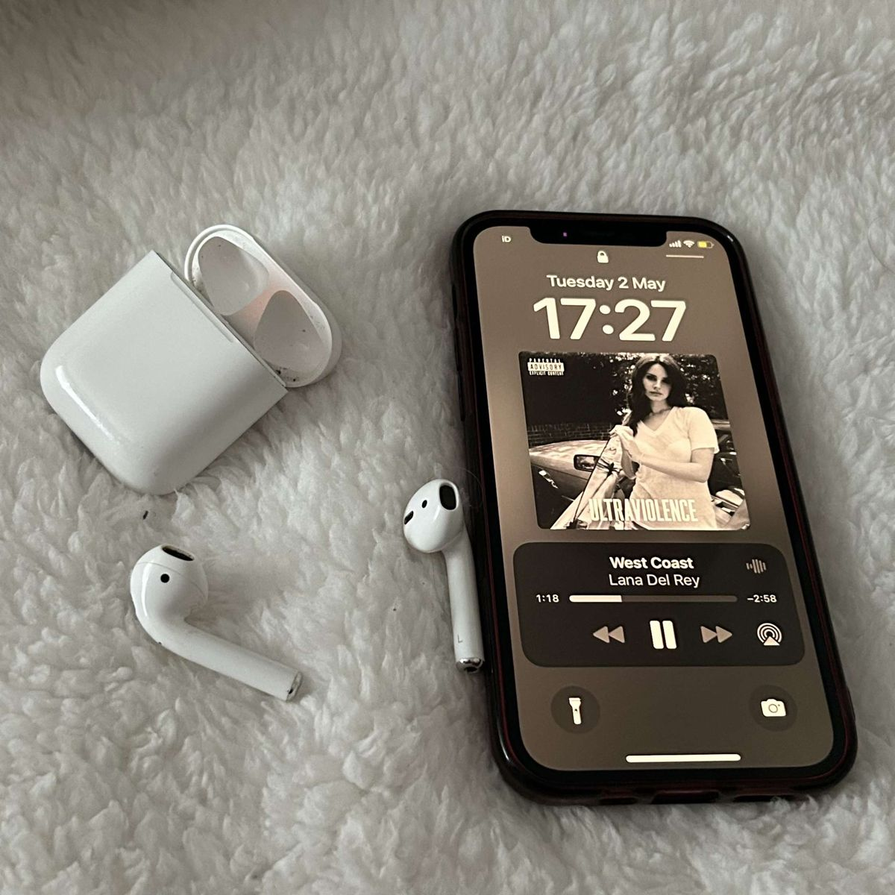
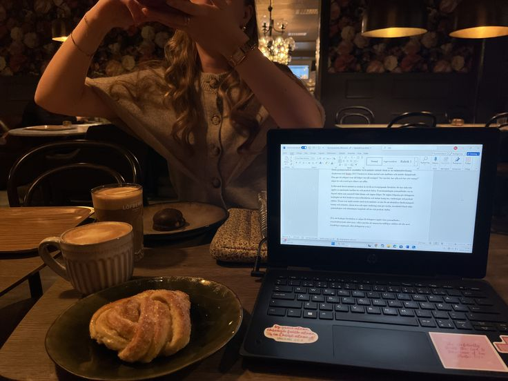
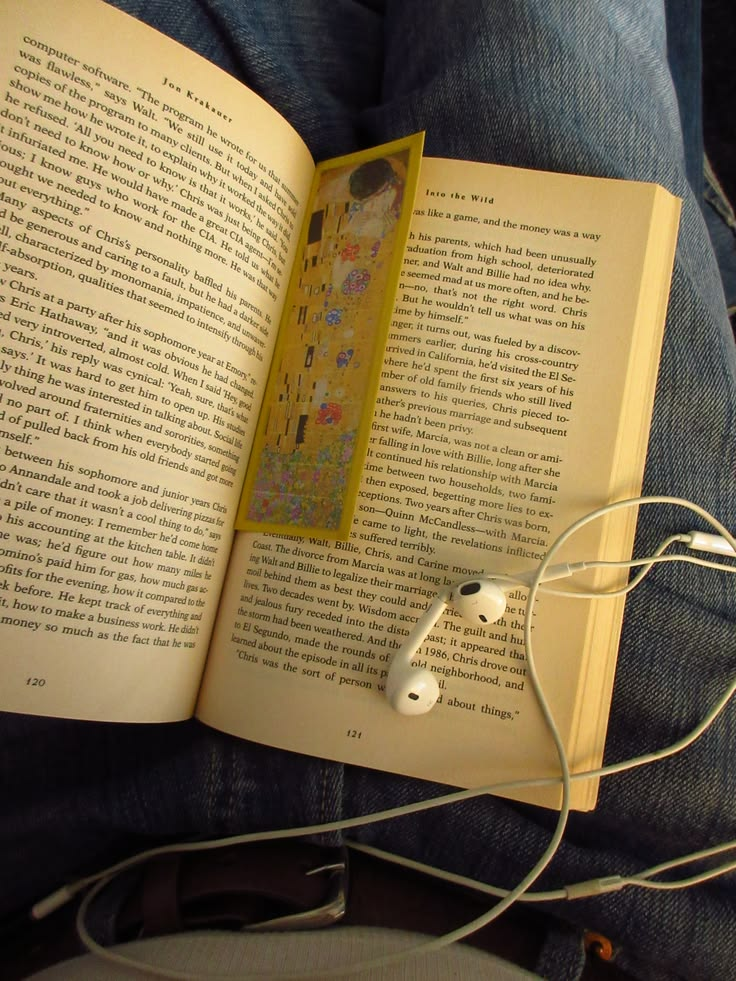
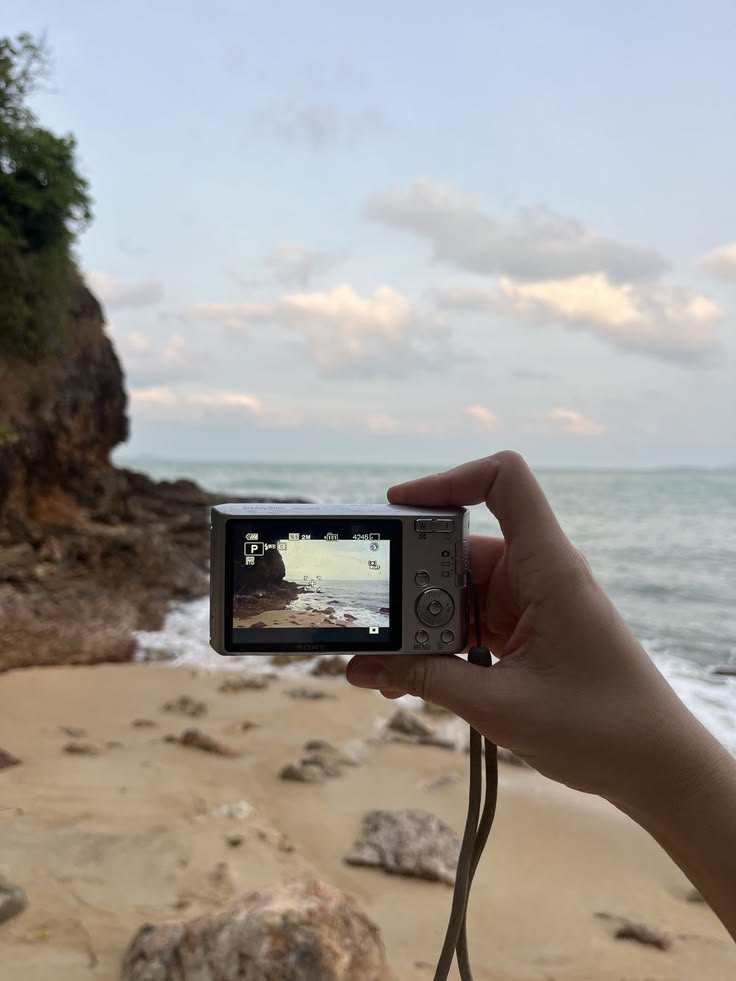
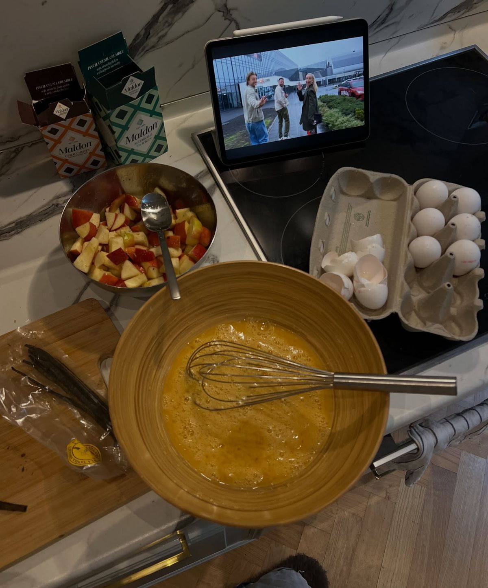

Escuchar Música
Me encanta escuchar música todo el día, especialmente a Olivia Rodrigo y a Lana del Rey y descubrir nuevas canciones.
Un poco de las cosas que más disfruto hacer en mi tiempo libre

Me encanta escuchar música todo el día, especialmente a Olivia Rodrigo y a Lana del Rey y descubrir nuevas canciones.

Disfruto mucho visitar distintas cafeterías, probar bebidas nuevas y pasar un rato agradable.

Me gusta mucho salir a pasear, cenar, platicar y crear buenos recuerdos con mis amigos.

Dedicarle tiempo a la lectura me ayuda a despejarme y aprender cosas interesantes.

Amo ir a la playa para relajarme, sentir el mar y disfrutar del atardecer.

Me gusta preparar nuevas recetas y disfrutar el proceso de cocinar platillos ricos.